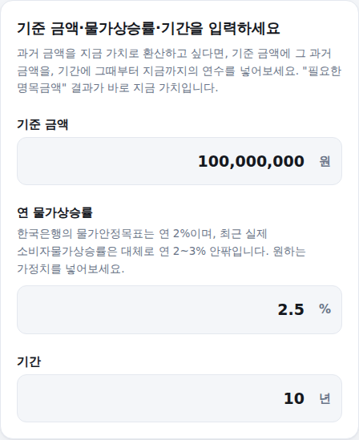
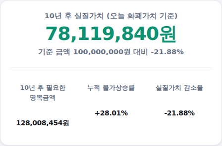

"지금 1억이 10년 뒤엔 실질적으로 얼마의 가치일까?" 인플레이션 계산기는 기준 금액, 물가상승률, 기간만 입력하면 실질가치 변화를 바로 계산해드립니다. 쓰는 법은 아래와 같습니다.
-
기준 금액·물가상승률·기간 입력
기준 금액과 연 물가상승률, 기간(년)을 입력하세요. 과거 금액을 지금 가치로 환산하고 싶다면, 기준 금액에 과거 금액을, 기간에 그때부터 지금까지의 연수를 넣으면 됩니다.

입력 화면
-
실질가치·필요한 명목금액 확인
N년 후 실질가치(오늘 화폐가치 기준 구매력)와 N년 후 필요한 명목금액(구매력 유지에 필요한 금액), 누적 물가상승률, 실질가치 감소율이 함께 나옵니다.

결과 화면 (1억원·연 2.5%·10년 예시)
계산 기준
실질가치는 기준금액 ÷ (1+물가상승률)^기간으로, 필요한 명목금액은 기준금액 × (1+물가상승률)^기간으로 계산합니다. 두 값은 같은 공식의 역수 관계라 한 번의 계산으로 함께 얻을 수 있습니다.
계산은 참고용이며, 실제 물가상승률은 연도·품목에 따라 다릅니다.